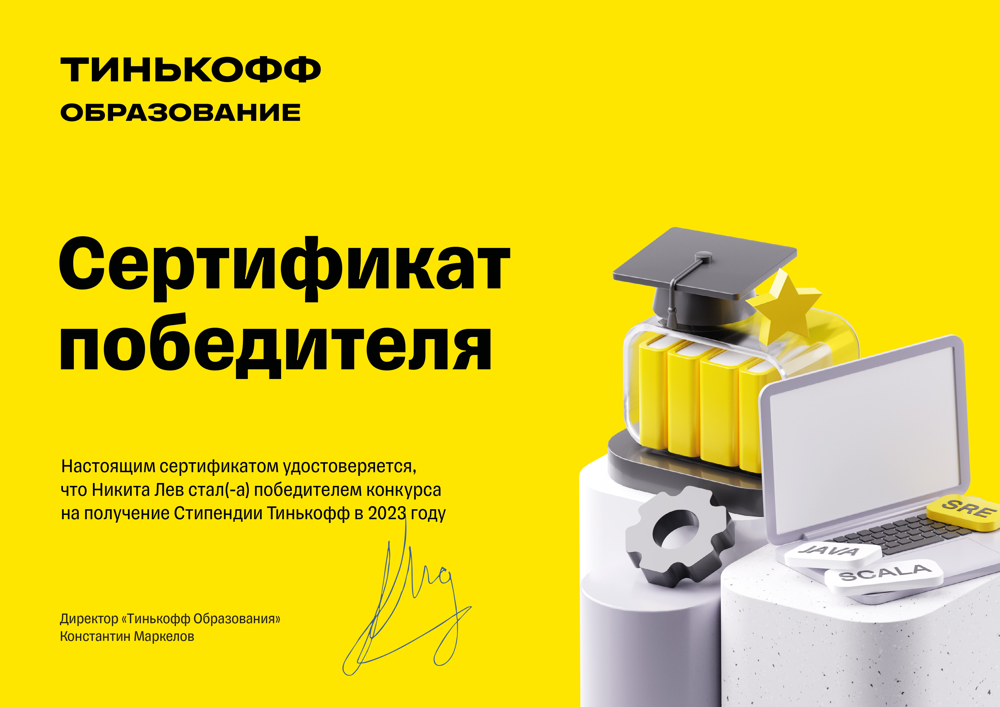

Никита Лев
Junior Data Scientist
Контактная информация
О себе
Опыт работы
07.2023 — 08.2023
2 месяца
ООО «Фабрика решений»
Красноярск, solutionfactory.ru, разработка ПО
Junior Data Scientist
- Разрабатывал модули машинного обучения для генерации новых знаний в программе лояльности maxbonus.ru
- Использовал классические, бустинговые, нейросетевые модели ML на данных о клиентах и чеках, получаемых из ClickHouse
Результаты и достижения
- Вероятность оттока клиентов
- Кластеризация клиентов
- Поиск похожих клиентов (Look alike)
- Прогнозирование корзины товаров
- Поиск наиболее интересных товаров
- Прогнозирование даты покупки
- 2 статистических метода (коэффициент вариации, индекс переменного состава)
Разработал 8 ML модулей, управляемых через Rest API:
07.2021 — 08.2021
2 месяца
ООО «МФЦ Полюс»
Красноярск, polyus.com, разработка ПО
Специалист группы развития веб-систем
- Внедрял Selenium WebDriver на языке C# для автоматизации тестирования
- Описывал BDD сценарии тестирования, используя Cucumber
Результаты и достижения
Автоматизировал тестирование системы электронного документооборота, что позволило избежать ручного тестирования.
Образование
2020-2024: бакалавр
Институт математики и фундаментальной информатики Сибирского Федерального Университета, г. Красноярск.
Прикладная математика и информатика
Дополнительное профессиональное образование
Октябрь 2021 — май 2022
ООО «Яндекс», СФУ и СПАО «Ингосстрах», курс «Машинное обучение и анализ данных» Квалификационная работа — Визуальный анализ с помощью интерактивных карт в задаче прогноза спроса на такси (прогнозирование временных рядов).
Навыки
Научная деятельность
2024
- Участие в XX Международной научной конференции студентов, аспирантов и молодых ученых «Проспект Свободный – 2024» (1 место)
- Участие в открытой конференции молодых учёных по математическому моделированию, информационным технологиям и фундаментальной математике ИВМ СО РАН (1 место)
2023
- Публикация статьи «Методы прогнозирования временных рядов в задаче анализа уровня концентрации загрязняющих веществ в атмосфере г. Красноярска». Безопасность и мониторинг природных и техногенных систем
- Участие в XX Международной научной конференции студентов, аспирантов и молодых ученых «Проспект Свободный – 2023», англоязычная секция (лауреат)
Курсы и сертификаты
2023 — Стипендиат Тинькофф
Изучил базовые и магистерские курсы по Machine Learning и Deep Learning от Тинькофф Образования
